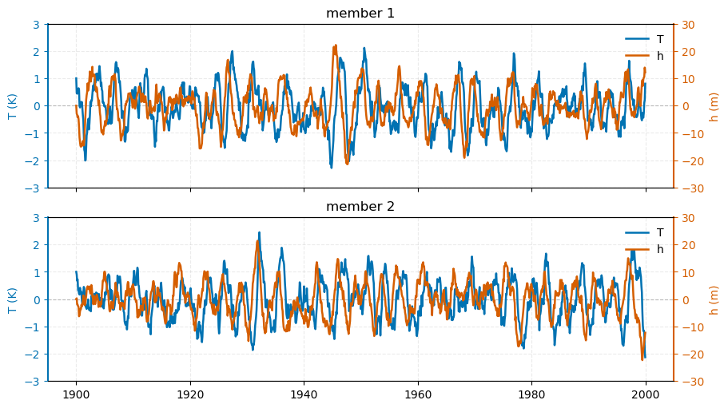

Quickstart#
This notebook demonstrates how to use pyCRO in the simplest configuration of the Recharge Oscillator (RO) model, featuring linear dynamics and additive white-noise forcing.
The RO model is written as:
\(\displaystyle \frac{dT}{dt} = RT + F_{1}h + \sigma_{T}w_{T}\)
\(\displaystyle \frac{dh}{dt} = -\varepsilon h - F_{2}T + \sigma_{h}w_{h}\)
where:
\(T\) is the sea surface temperature (SST) anomaly,
\(h\) is the upper-ocean heat content (recharge state),
\(w_T\) and \(w_h\) are independent white-noise processes,
\(R\), \(F_1\), \(F_2\), and \(\varepsilon\) are dynamical RO feedback parameters,
\(\sigma_T\) and \(\sigma_h\) control stochastic forcing amplitudes.
This notebook was contributed by Sen Zhao.
[1]:
import warnings
warnings.filterwarnings("ignore")
import os
import sys
import numpy as np
import matplotlib.pyplot as plt
sys.path.append(os.path.abspath("../../../"))
import pyCRO
Load precomputed RO parameters from ORAS5#
[2]:
par = pyCRO.par_load(data_name="ORAS5", ro_name = "Linear-White-Additive")
par
[2]:
{'R': [-0.0731702636710546],
'F1': [0.017938268057197594],
'F2': [1.2939079422481348],
'epsilon': [0.008754185790444461],
'b_T': [],
'c_T': [],
'd_T': [],
'b_h': [],
'sigma_T': [0.21698921132838628],
'sigma_h': [1.5547824185851542],
'B': [],
'm_T': [],
'm_h': [],
'n_T': [1],
'n_h': [1],
'n_g': [2]}
Conduct RO simulations#
[3]:
IC = [1.0, 0.0] # Initial conditions for T and h
N = 12 * 100 # Simulation length in months (e.g., 100 years)
NE = 2 # Number of ensemble members
RO_ds = pyCRO.CRO_simulate(par, IC, N, NE, verbose=False)
RO_ds
[3]:
<xarray.Dataset> Size: 48kB
Dimensions: (time: 1200, member: 2)
Coordinates:
* time (time) datetime64[ns] 10kB 1900-01-01 1900-02-01 ... 1999-12-01
* member (member) int64 16B 0 1
Data variables:
T (time, member) float64 19kB 1.0 1.0 0.4566 ... -1.924 0.8034 -2.128
h (time, member) float64 19kB 0.0 0.0 -2.964 ... -13.88 12.26 -12.31Plot the outputs#
[6]:
time_axis = RO_ds.time
n_row = 2
fig, axes = plt.subplots(
n_row, 1,
figsize=(9, 5),
sharex=True,
sharey=True,
layout='constrained'
)
color_T = "#0072B2" # Nature-style blue (Okabe-Ito)
color_h = "#D55E00" # Nature-style vermillion/orange
for i, ax in enumerate(axes.flat):
# --- T (left axis) ---
line1, = ax.plot(time_axis, RO_ds['T'][:, i],
color=color_T, lw=1.8, label="T")
ax.set_ylabel("T (K)", color=color_T)
ax.tick_params(axis='y', colors=color_T)
ax.spines['left'].set_color(color_T)
ax.spines['left'].set_linewidth(1.5)
ax.spines['right'].set_visible(False)
# zero line
ax.axhline(0, ls='--', c='gray', lw=0.8, alpha=0.5, zorder=0)
# --- h (right axis) ---
axR = ax.twinx()
line2, = axR.plot(time_axis, RO_ds['h'][:, i],
color=color_h, lw=1.8, label="h")
axR.set_ylabel("h (m)", color=color_h)
axR.tick_params(axis='y', colors=color_h)
axR.spines['right'].set_color(color_h)
axR.spines['right'].set_linewidth(1.5)
axR.spines['left'].set_visible(False)
axR.set_ylim([-30, 30])
ax.set_ylim([-3, 3])
# --- combined legend (clean) ---
ax.legend(handles=[line1, line2], loc="upper right", frameon=False)
ax.set_title(f"member {i+1}")
# shared x-axis styling
# axes[-1].set_xlabel("Time (months)")
for ax in axes:
ax.grid(True, alpha=0.25, linestyle='--')
plt.show()

[ ]: